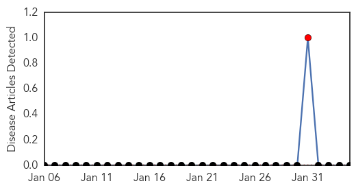

Hemmorhagic Fever
30-Day Web Trend
30 alerts, 0 warnings

30-Day Twitter Trend
0 alerts, 0 warnings

Article Locations

Article Confidences

Top Articles:
-
No articles found for Feb 04, 2014
Top Tweets:
-
No tweets found for Feb 04, 2014
Swine Flu
30-Day Web Trend
7 alerts, 6 warnings

30-Day Twitter Trend
6 alerts, 0 warnings

Article Locations

Article Confidences

Top Articles:
- 0.996
- Flu threat fading in Oregon, Southwest Wash.
- 0.994
- Is The H1N1 Flu Bug: 'A Super Virus'? Why Are People Dying?
- 0.985
- Swine flu kills 24 across Egypt
- 0.970
- Swine flu kills 24 in Egypt over past 2 months
- 0.836
- Flu outbreak temporarily closes Westbrook nursery school
- 0.806
- Govt lifts ban on pigs movement
- 0.548
- Government lifts ban on the movement of pigs and pork products in Southern Province
Top Tweets:
-
No tweets found for Feb 04, 2014